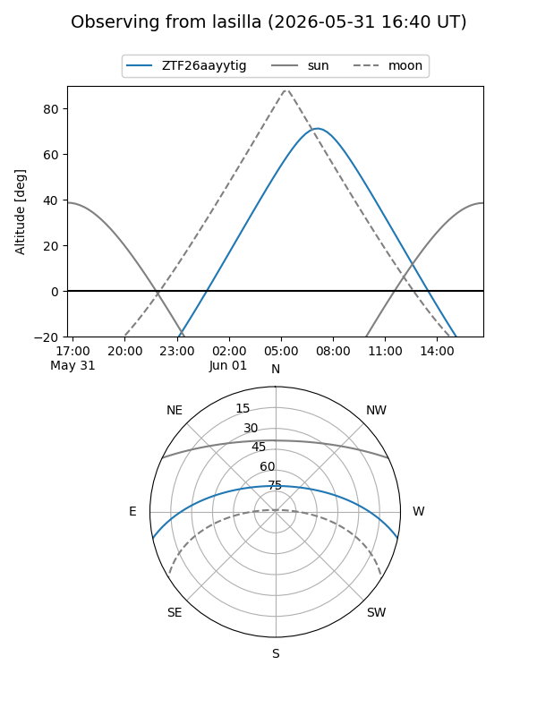
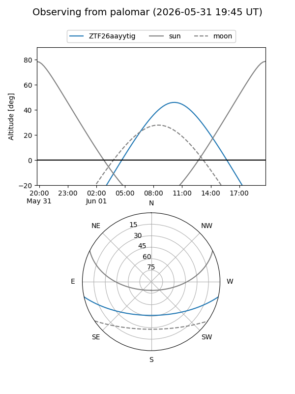

ZTF26aayytig
Target ZTF26aayytig at 2026-05-31 11:23
Aliases and brokers:
lsst-FINK: link
lsst-Lasair: link
lsst-ALeRCE: link
ztf-FINK: link
ztf-Lasair: link
ztf-ALeRCE: link
alt names
ZTF26aayytig (ztf,fink_ztf)
Coordinates:
equatorial (ra, dec) = 285.3796,-10.62731
equatorial (HMS+DMS) = 19:01:31.09,-10:37:38.31
galactic (l, b) = (24.5644,-7.03950)
Flags:
Photometry:
last ztfg=16.40
1 ztfg detections
Lightcurve
Visibility


Additional plots